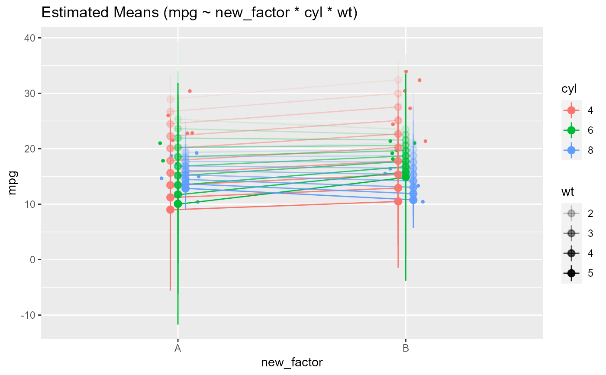
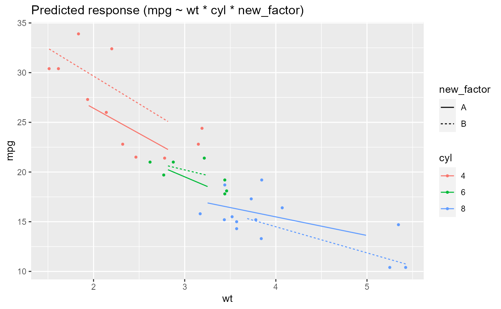
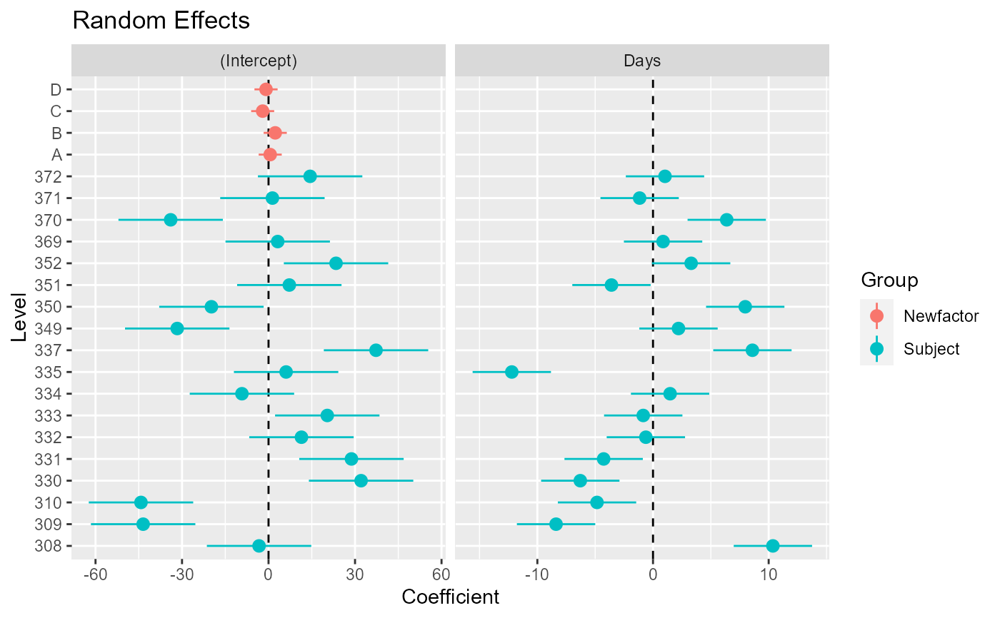

R/visualisation_recipe.R, R/visualisation_recipe.estimate_means.R, R/visualisation_recipe.estimate_predicted.R, and 1 more
visualisation_recipe.RdThis function prepares some objects for visualisation by returning a list of layers with data and geoms that can be easily plotted using ggplot2.
visualisation_recipe(x, ...) # S3 method for estimate_means visualisation_recipe( x, show_data = "points", point = NULL, jitter = point, boxplot = NULL, violin = NULL, line = NULL, pointrange = NULL, labs = NULL, ... ) # S3 method for estimate_predicted visualisation_recipe( x, show_data = "points", point = NULL, density_2d = NULL, line = NULL, ribbon = NULL, labs = NULL, ... ) # S3 method for estimate_random visualisation_recipe( x, hline = NULL, pointrange = NULL, facet_wrap = NULL, labs = NULL, ... )
| x | An easystats object. |
|---|---|
| ... | Other arguments passed to other functions. |
| show_data | Display the "raw" data as a background to the model-based estimation. Can be set to |
| point, jitter, boxplot, violin, pointrange, density_2d, line, hline, ribbon, labs, facet_wrap | Additional aesthetics and parameters for the geoms (see customization example). |
# ============================================== # estimate_means # ============================================== if (require("see")) { # Simple Model --------------- x <- estimate_means(lm(Sepal.Width ~ Species, data = iris)) layers <- visualisation_recipe(x) layers plot(layers) # Customize aesthetics layers <- visualisation_recipe(x, jitter = list(width = 0.03, color = "red"), line = list(linetype = "dashed") ) plot(layers) # Customize raw data plot(visualisation_recipe(x, show_data = c("violin", "boxplot", "points"))) # Two levels --------------- data <- mtcars data$cyl <- as.factor(data$cyl) data$new_factor <- as.factor(rep(c("A", "B"), length.out = nrow(mtcars))) model <- lm(mpg ~ new_factor * cyl * wt, data = data) x <- estimate_means(model, levels = c("new_factor", "cyl")) plot(visualisation_recipe(x)) # Modulations -------------- x <- estimate_means(model, levels = c("new_factor"), modulate = "wt") plot(visualisation_recipe(x)) x <- estimate_means(model, levels = c("new_factor", "cyl"), modulate = "wt") plot(visualisation_recipe(x)) }#>#># ============================================== # estimate_expectation, estimate_response, ... # ============================================== if (require("ggplot2")) { # Simple Model --------------- x <- estimate_relation(lm(mpg ~ wt, data = mtcars)) layers <- visualisation_recipe(x) layers plot(layers) # Customize aesthetics layers <- visualisation_recipe(x, point = list(color = "red", alpha = 0.6, size = 3), line = list(color = "blue", size = 4), ribbon = list(fill = "green", alpha = 0.7), labs = list(subtitle = "Oh yeah!") ) layers plot(layers) # Customize raw data plot(visualisation_recipe(x, show_data = "none")) plot(visualisation_recipe(x, show_data = c("density_2d", "points"))) plot(visualisation_recipe(x, show_data = "density_2d_filled")) plot(visualisation_recipe(x, show_data = "density_2d_polygon")) plot(visualisation_recipe(x, show_data = "density_2d_raster")) + scale_x_continuous(expand = c(0, 0)) + scale_y_continuous(expand = c(0, 0)) # 2-ways interaction ------------ # Numeric * numeric x <- estimate_relation(lm(mpg ~ wt * qsec, data = mtcars)) layers <- visualisation_recipe(x) plot(layers) # Factor * numeric x <- estimate_relation(lm(Sepal.Width ~ Species * Sepal.Length, data = iris)) layers <- visualisation_recipe(x) plot(layers) # 3-ways interaction ------------ data <- mtcars data$vs <- as.factor(data$vs) data$cyl <- as.factor(data$cyl) data$new_factor <- as.factor(rep(c("A", "B"), length.out = nrow(mtcars))) # Numeric * numeric * numeric x <- estimate_relation(lm(mpg ~ wt * qsec * hp, data = data)) layers <- visualisation_recipe(x) plot(layers) # Numeric * numeric * factor x <- estimate_relation(lm(mpg ~ wt * am * vs, data = data)) layers <- visualisation_recipe(x) plot(layers) # Numeric * factor * factor x <- estimate_relation(lm(mpg ~ wt * cyl * new_factor, data = data)) layers <- visualisation_recipe(x) plot(layers) }#># ============================================== # estimate_random # ============================================== if (require("see") && require("lme4")) { data <- lme4::sleepstudy data <- rbind(data, data) data$Newfactor <- rep(c("A", "B", "C", "D")) # 1 random intercept model <- lmer(Reaction ~ Days + (1|Subject), data = data) x <- estimate_random(model) layers <- visualisation_recipe(x) layers plot(layers) # 2 random intercepts model <- lmer(Reaction ~ Days + (1|Subject) + (1|Newfactor), data = data) x <- estimate_random(model) plot(visualisation_recipe(x)) model <- lmer(Reaction ~ Days + (1 + Days|Subject) + (1|Newfactor), data = data) x <- estimate_random(model) plot(visualisation_recipe(x)) }